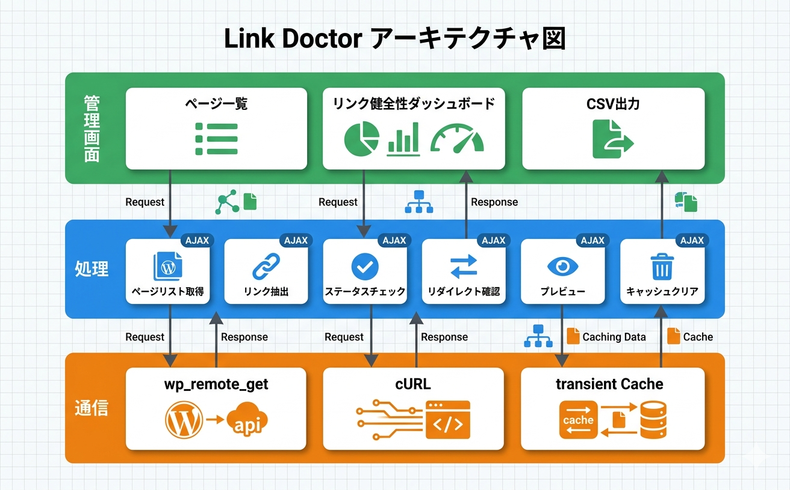

トラブルシューティング
よくある問題とその解決方法をまとめています。
よくある問題と解決策
リンクチェックがタイムアウトする
原因: サーバーのPHP実行時間制限やメモリ不足、またはリンク先サーバーの応答遅延が考えられます。
ブラウザのコンソール（F12キー）でエラーメッセージを確認する
WordPressの wp-config.php でメモリ上限を確認する（WP_MEMORY_LIMIT）
サーバーのPHP max_execution_time 設定を確認する（推奨: 300秒以上）
チェック対象のページ数が多い場合は、ページを絞り込んでからチェックを実行する
リンクチェックはAJAXベースで処理されるため、1回のリクエストがタイムアウトしても再実行できます。
全てのリンクがエラーと表示される
原因: サーバーから外部へのHTTPリクエストが制限されている可能性があります。
サーバーのファイアウォール設定で外部HTTPリクエストが許可されているか確認する
PHP の allow_url_fopen が有効か確認する
cURL拡張がインストール・有効化されているか確認する
共用サーバーでは外部HTTPリクエストが制限されていることがあります。サーバー管理者またはホスティング会社に問い合わせてください。
特定のリンクが403エラーになる
原因: リンク先サイトがボットからのアクセスを制限している可能性があります。
ブラウザでリンク先URLに直接アクセスして正常に表示されるか確認する
正常に表示される場合、リンク先サイトが自動アクセスを制限しているため、403は誤検知として扱う
一部のサイト（SNS、大手ポータル等）はボットからのアクセスに対して403を返すことがあります。これは実際のリンク切れではありません。
CSVエクスポートで文字化けする
原因: エンコーディングの問題です。
CSVファイルをテキストエディタで開き、エンコーディングがUTF-8であることを確認する
Excelで開く場合は「データ」→「テキストファイルから」でUTF-8を指定してインポートする
動作要件
| 項目 | 要件 |
|---|---|
| WordPress | 6.0 以上 |
| PHP | 7.4 以上 |
| PHP拡張 | cURL |
| ブラウザ | Chrome, Firefox, Safari, Edge（最新版） |
| 権限 | 管理者 |
技術仕様
- データ保存: wp_options (
ksv_version), transient cache - カスタムテーブル: なし
- 外部通信: wp_remote_get + cURL (リンクステータスチェック)
- Cron: なし
- メール: なし
- AJAXハンドラー: 6個
- フロントエンド出力: なし（管理画面のみ）
- セキュリティ: nonce検証、capability チェック
